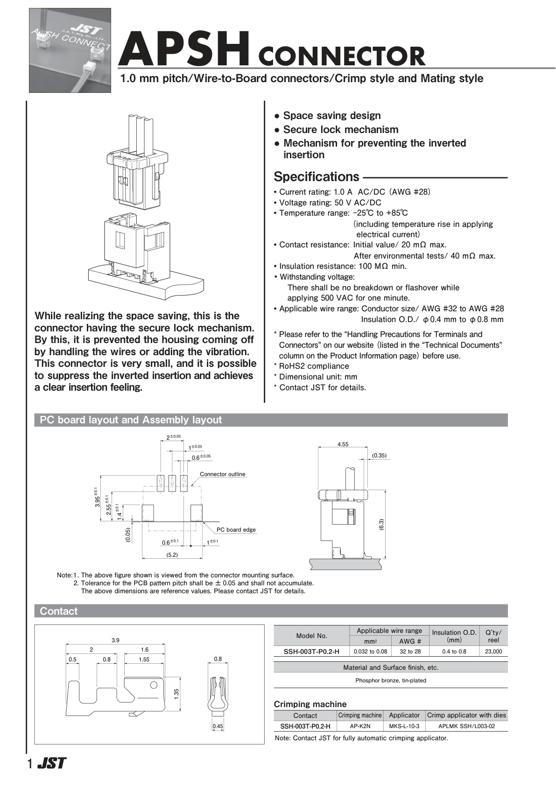
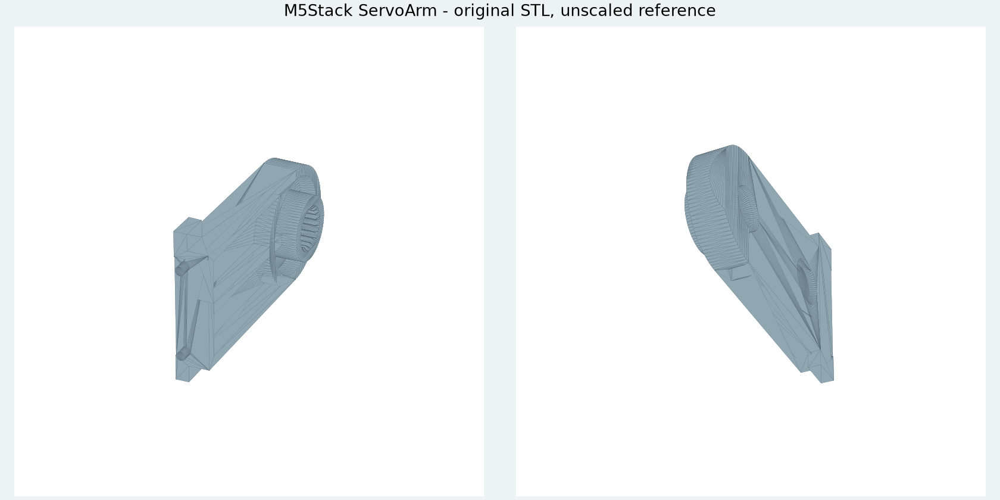

供应商制作方式已确定。长度、分支和装配要求由项目设计；不能把还没完成的设计统称为“等实物”。主模型 M1.47 未改，尚无制造图放行。
原M1.47桥座带轴承直接套线、4组左侧线尾排布及轴承后装的4组排布均未通过。所试线尾位置的上下可通过范围错开，中心小孔仍存在；端子请求空间碰底面，另一候选的导线中心在桥座材料内。上壳5条测试路线亦未通过。
这些结果只排除所试路线。之前PH带线插接局部通过仍有效，完整穿颈和装配仍未完成；主模型未改。查看原实体剖面和具体诊断。
自由线尾先留在颈部外侧，PH沿圆滑路径转向。171个全线位置、174个全线连续区间及875个插头/线根扫掠包络通过；原名义总长保持，主模型未改。
之后穿颈、H01/H04后装、其他跨关节线、FFC、扎带与手部工具仍待完成。查看带线动作图与连续检查。完整制造图尚未放行。
裸PH胶壳从上方开口进入的7段平移路径，已通过封闭实体扫掠复核。H02/H03先装、H01/H04延后；四根导线前5mm直段的24段扫掠通过，余下柔性导线随动尚未检查。
颈部CAM1/2和身体插头旁CAM3/4的原局部问题已定位，提前调整高度、临时扭线仍未使原带线后移路线通过。
另比较保持上壳打开、后连接身体端PH的顺序，以及明确延后H01/H04的候选。裸胶壳检查和完整带线装配分开记录。
查看局部图、候选结果和范围。主模型保持M1.47，裁线图尚未放行。
保留原插头包络，采用外壳16°/抬高14mm、桥上抬18mm，再一起后移20mm并提离。297个刚体检查记录通过，包含后板插头和14根固定身体线。
前两段含CAM导线的61+37个检查记录也通过。后续四根线的共同后移、竖直提离和其他线束仍未全部完成。
查看顺序图、来源核对和各阶段范围。主模型M1.47与制造图保持。
只调整H02第二根线的中段，端口、针序和弯曲半径保持，名义路线增加约0.55mm。四根CAM与两根H02在桥上抬0–18mm的37个有限位置通过线形检查；新H02的提前装入和后续占用复核也通过。
该阶段补查暴露了J2插头随外壳运动的问题；其刚体后续路径见上节，完整线束仍未闭合。
桥上移18mm、再后移14mm，两处曾分别找到四根线的排布。原第4根线与H02的中途问题已在上述联合研究中取得进展；两个独立端点仍不能代替完整后移过程。
线长复核发现原H02/H04裸插头路径部分位置不够长。H02采用更低走向，在开放机身内先接好：201个带线装入位置、随后408个身体位置及130个头部姿态通过。打印件与PCB不改；H01/H04的10根后装导线、人手工具、固定与其他线束仍需完成。
查看此前H02走向与线长问题 · 此前裸插头路径对照。相机支架另有上沿清理候选，待用户采用；主模型保持。
H01每根821组、H04每根106组提前连接候选，尚未形成完整通过的组合。CAM留在身体侧、桥单独移动也不能直接套用原路径：桥上移18mm时与导线相交。H02已有候选保留，完整带线装配仍未完成。
查看三种尝试的具体范围和失败证据。这些是项目设计问题，不是只能等待厂家资料或实物。
22件偏航与舵盘先装、14件头托与CAM后装的有限刚体路径通过。四根全长及PH插头已建入，153–162mm线尾暂存在头部上方。当时身体线束已装的动作有间隙/相交问题；新顺序见上节。
此前顺序图、完整线长和局部剖面。未改主模型或主动画。
同一较大端子预留采用临时R10弯道及两件既有候选通道扩宽后，四方向连续穿入、导线回位与保存网格复核通过。端子/导线间隙下界约0.308/0.306mm；轴颈径向壁厚最小样本1.60→1.48mm，强度未验证，候选未应用主模型。
JST APSH 目录列出相同的 SSH-003T-P0.2-H，补充接触段和压接翼的轴向标注。图上的 1.55 mm 是轴向尺寸，并非总高度。接触体下方小突出及压接成品的完整外形仍未标全。

专用手册、逐型号端子图和胶壳 STEP 的官方入口已找到，但返回的是邮件申请表，尚未取得文件。微雪当前资源页未列出完整相机 FPC 尺寸文件。
再次取得的 PDF 与已存文件逐字节相同，复用原文件，没有新增尺寸。第 2 页同料号 SSH-003T-P0.2-H 的局部尺寸及工装信息已记录。此目录的应用范围更窄，独立保留；没有据此变更 SH 胶壳、线材或实际压接工艺。
M5Stack 发布的 SCS0009 PDF 与已有版本相同，配件页仍为 No Accessories。其结构仓库另有带齿孔的 StackChan-ServoArm，可以参考连接形式；它并非我们采购套装的配套舵盘定稿，未应用主模型。

按几何槽位 3→2→1→0 穿入，先暂缓上端收拢。同样较大端子预留尺寸下，穿入 1228、回位 256、入座 256、四段弯线 1735 个连续区间通过。弯线仅调整两处临时装配动作。
本轮已补建完整名义线长、上方暂存线尾和PH插头，身体供线过程仍未通过；不是额外裁线长度。扎带和真实端子入壳仍待完成。
| 路线 | 检查 | 结论 |
|---|---|---|
| 端子沿弯曲路线引入 | 16 组 | 均未通过结构或邻线检查 |
| 四线先竖直，再同步整理 | 21 个位置 | 支架间隙不足 |
| 整理时临时抬高 2、3、4 mm | 3 × 21 个位置 | 仍有支架或舵机间隙问题 |
| 颈部出口先竖直引出端子 | 8 组整段方盒扫掠 | 局部通过；真实端子外形及下方供线仍待完成 |
| 从下向上逐段整理 | 41 个位置 | 支架与邻线间隙界限不足 |
| 临时延长切线后再转竖直 | 4、8、12、16 mm 四种候选 | 四种均在首个位置未通过；支架或入线座间隙不足 |
整理动作目前只做有限位置诊断；竖直端子行程用整段扫掠检查。两者不可混为完整工序通过。研究使用未采用的线座候选，主模型未改；真实端子、扎带穿绕及完整装配仍未完成。